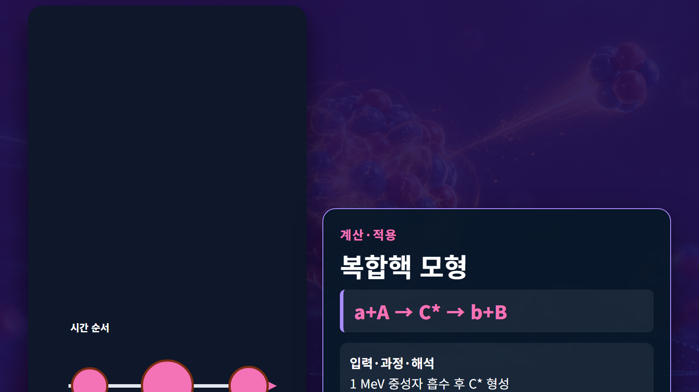

질량·에너지·핵반응 · 029
복합핵 모형
입사입자를 흡수한 뒤 에너지가 핵자 사이에 섞인 들뜬 중간핵
입사입자를 흡수한 뒤 에너지가 핵자 사이에 섞인 들뜬 중간핵
개념 정의
입사입자를 흡수한 뒤 에너지가 핵자 사이에 섞인 들뜬 중간핵
복합핵 모형의 개념 정의에서는 핵물리의 양은 관측대상과 계의 경계를 먼저 정해야 합니다. 복합핵 모형의 개념 정의에서는 같은 용어라도 원자 전체의 질량인지 원자핵만의 질량인지, 입자 하나의 에너지인지 거시계의 출력인지에 따라 계산에 포함할 항목이 달라집니다.
작동 원리
복합핵 모형의 작동 원리에서는 핵반응은 에너지·운동량·전하·핵자수 보존을 동시에 만족해야 합니다. 이 주제의 대표 관계는 a+A→C*→b+B입니다. 복합핵 모형의 작동 원리에서는 관계식은 반응의 가능 범위와 에너지 배분을 보여 주지만 실제 발생률은 에너지별 반응단면적, 핵준위와 입사입자의 각도분포까지 포함해야 결정됩니다.
단계별 계산과 상황 예시
예시 1｜1 MeV 중성자 포획 후 C*가 감마선을 방출할 수 있습니다. 복합핵 모형의 단계별 계산과 상황 예시에서는 입력값을 동일한 에너지 또는 질량 단위로 맞춘 뒤 관계식에 대입하고, 계산 결과가 반응 가능성·방출에너지·에너지 전달 중 무엇을 뜻하는지 구분합니다. 복합핵 모형의 단계별 계산과 상황 예시에서는 단위가 MeV라면 입자 하나의 반응 에너지이며 원자로 출력과 직접 같지 않습니다.
예시 2｜같은 C*가 에너지 조건에 따라 중성자나 하전입자를 방출합니다. 복합핵 모형의 단계별 계산과 상황 예시에서는 첫 예와 다른 조건을 비교하면 값 하나보다 조건 변화가 결과를 어떻게 바꾸는지 알 수 있습니다. 복합핵 모형의 단계별 계산과 상황 예시에서는 계산에서는 입력, 단위 변환, 산술 과정, 결과의 물리적 해석을 순서대로 기록해야 재현과 검산이 가능합니다.
| 구분 | 핵심 내용 | 판독 기준 |
|---|---|---|
| 정의 | 입사입자를 흡수한 뒤 에너지가 핵자 사이에 섞인 들뜬 중간핵 | 계의 경계 확인 |
| 대표 관계 | a+A→C*→b+B | 단위 일관성 확인 |
| 공학 적용 | 공명·포획·증발반응 단면적 해석 | 평가핵자료 적용 |

원자력공학의 실제 적용
실제 적용에서는 공명·포획·증발반응 단면적 해석. 복합핵 모형의 원자력공학의 실제 적용에서는 수송·방사화·차폐 계산 코드는 평가핵자료의 에너지별 단면적과 각도·에너지 분포를 사용합니다. 복합핵 모형의 원자력공학의 실제 적용에서는 설계자는 적용 온도, 재료 조성, 입자 에너지 범위와 불확실성이 사용한 자료의 범위 안에 있는지 확인합니다.
복합핵 모형의 원자력공학의 실제 적용에서는 실무 계산은 보존법칙으로 1차 검산한 뒤 핵자료 라이브러리와 실험 근거로 보정합니다. 복합핵 모형의 원자력공학의 실제 적용에서는 결과에는 사용한 핵종, 입사에너지, 단위, 자료 버전과 가정 조건을 함께 기록해야 다른 사람이 같은 판단을 재현할 수 있습니다.
복합핵 모형의 원자력공학의 실제 적용에서는 예비평가에서는 대표값으로 물리적 규모와 방향을 확인하고, 상세평가에서는 에너지군 구조와 온도·재료조건을 실제 문제에 맞춥니다. 복합핵 모형의 원자력공학의 실제 적용에서는 계산 결과가 측정값과 다르면 식을 임의로 조정하기보다 입력자료, 단위 변환, 계의 경계, 누락된 반응채널 순으로 점검합니다. 복합핵 모형의 원자력공학의 실제 적용에서는 마지막에는 민감도 분석으로 어떤 입력이 결과를 지배하는지 확인합니다. 복합핵 모형의 원자력공학의 실제 적용에서는 이 절차는 개념식을 안전해석이나 실험계획에 연결할 때 과도한 단순화와 단위 오류를 줄여 줍니다. 복합핵 모형의 원자력공학의 실제 적용에서는 또한 계산서에는 적용범위와 제외조건을 명시하고, 독립 검산자가 원자료부터 결과까지 추적할 수 있도록 중간값을 보존합니다. 복합핵 모형의 원자력공학의 실제 적용에서는 실험값이 없는 영역은 보간과 외삽을 구분하고 불확실성을 결과와 함께 제시합니다.
오해와 적용 한계
복합핵 모형의 오해와 적용 한계에서는 대표적인 오해는 관계식 하나로 모든 핵종과 에너지에서 같은 결과를 낸다고 보는 것입니다. 모든 반응이 복합핵을 거치지는 않으며 직접반응도 존재합니다. 복합핵 모형의 오해와 적용 한계에서는 그림은 경로와 에너지 흐름을 이해시키는 개념 장면이며 핵자 크기, 거리와 시간척도는 실제 비율이 아닙니다. 복합핵 모형의 오해와 적용 한계에서는 정량 평가는 핵종별 원질량과 평가핵자료를 우선합니다.
복합핵 모형의 오해와 적용 한계에서는 비유는 관계를 기억하는 데 유용하지만 실제 핵은 고전적인 공이나 행성계가 아닙니다. 복합핵 모형의 오해와 적용 한계에서는 양자상태, 확률분포와 보존법칙을 훼손하지 않는 범위에서만 비유를 사용하고, 정량값은 원자료로 돌아가 검증합니다.
핵심 정리
복합핵 모형은 정의, 보존관계, 적용 조건을 함께 읽어야 하는 개념입니다. 복합핵 모형의 핵심 정리에서는 두 예시처럼 입력값과 단위를 먼저 쓰고 계산과 해석을 분리하면 공식 암기를 넘어 결과의 의미를 확인할 수 있습니다. 복합핵 모형의 핵심 정리에서는 실제 설계에서는 핵종별 자료와 불확실성을 적용해 개념식의 한계를 보완합니다.